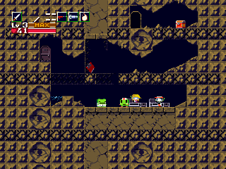
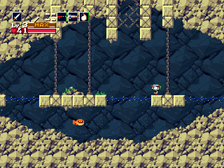
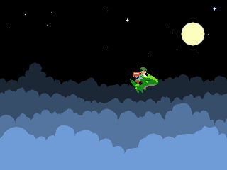
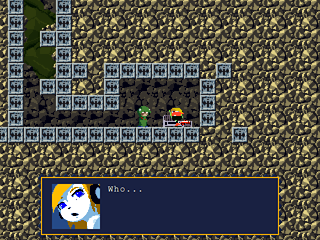
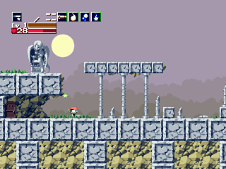

{kind=link}
After arriving in the Mimiga Village, Quote sees two Mimiga, King and Toroko, arguing as to whether to hand Sue (apparently another Mimiga) over to the Doctor (Date), who has been kidnapping Mimiga from the village (and spreading terror in general).
After informing the villagers of what had just happened, Quote goes into Arthur's house (Arthur is Toroko's brother, and hero of the village, until he was killed by the Doctor). This place will become the main hub that Quote uses to teleport to various zones in the game.
After stumping all over Igor, Balrog arrives to save the day, only to end up getting beaten yet again.
...and proceeds to get stomped by Balrog. Misery appears, not happy that she captured the wrong Mimiga earlier, turns Balrog into a giant frog. After fighting off Balrog, Quote pulls the poor robot out from the floor. The robot proceeds to ask Quote to bring it the right ingredients so it can make an explosive to help Quote break open the shelter's door.
After entering the Sand Zone, Quote encounters Curly Brace, a (female) robot much like himself. Curly Brace thinks Quote is there to take away the Mimiga children, tries to defend the Mimiga, and fails. Good thing Quote is a good guy.
Although Quote manages to find all the puppies, Balrog is one step ahead and takes the key from Jenka. After chasing Balrog to the storehouse, where the doctor and Misery forces Toroko to eat some red flowers, the King appears and tries to save Toroko, only to get beaten by Misery. After defeating a frenzied Toroko (who dies), the King dies as well and gives Quote his super cool sword. Before Quote can celebrate, Misery appears and sends both Quote and Balrog to the Labyrinth, the "dump" of the island.
After defeating the "ghost," Quote returns to the clinic with Cure-All for Curly Brace.

Going a little bit ahead, Quote encounters one of the harder boss of the game, Monster X......which turns out to be a cat...

Quote, backed up by the awesome Curly Brace, makes his way deeper into the Labyrinth.
The Core is what's keeping the island floating (yes, it's a floating island). After defeating the core, Misery and the doctor appears and teleport the core back to their lab in order to keep it alive (so the island doesn't fall).
Quote uses the tow rope and carries Curly Brace through the Waterway.
To get out of tehe Waterway, Quote needs to beat Ironhead, a character from Pixel's previous game Ika-chan.
Quote finds himself washed up in the Mimiga Village.

Story update. The Doctor has captured all the Mimiga and is forcing them to help him cultivate more red flowers. The reason the Doctor is so powerful is because he got his hands on the Demon Crown, which grants its user power as well as the ability to command Balrog and Misery.Quote goes through the destroyed Egg Corridor, fighting Sky Dragons along the way.
And off they go!!!
Or not. Choosing not to run away, Quote climbs the Outer Wall to reach the Plantation.

Inside the Plantation, Quote meets Curly Brace, who has lost her memory.Quote explores the plantation, finally ending up in a teleportation room. Before he could do anything, he gets caught by a Droll (guards).

After getting caught and locked away in a cell, Quote finds the letter Sue left in his pocket, and escapes to meet Sue's mother, who asks Quote to collect various parts for her so she could build a rocket.Quote does so, and the rocket is complete to carry Quote to the Throne Room to stop the Doctor.
Now Quote makes his way through the Final Cave.
Phew, that was hard.

Quote fights Misery, wins.The Doctor has taken the red flower's power and made a red crystal, which not only can affect a Mimiga, but can affect humans as well. Quote proceeds to fight the Doctor.
After beating the Doctor, Misery appears and asks Quote to take Sue leave the island. Before any deals could be made, the Doctor appears again, transforms Misery and Sue into monsters, and merges with the Island Core. The final boss! Quote, being the protagonist that he is, wins, of course.
Everyone else escapes on the helicopter they originally used to come to the island. The End.
After Ballos is defeated, Balrog saves Quote and Curly from the collapse cave, and the three live happily ever after.
The End.